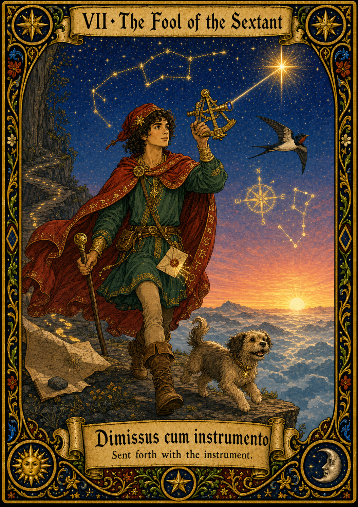

What kind of AI agent
The project has run for months, and the AI has been open beside you the whole way, but it has never decided anything. You name the next step, you set the schema, you say what to check; it helps with the stretch of work in front of you, and then it waits for you again.
You seem to keep AI beside you throughout an entire project, letting it participate from the first step to the last and take on fairly complete pieces of work. Even with that broad scope, it rarely gets to make real decisions for you, because you tend to name each next step yourself, hold the overall structure, and let the tool complete only the local stretch of work before waiting for your next instruction. A tool designed to run the whole process on its own may be exactly the kind of tool you are choosing not to use.
That instinct seems to come from having seen what can go wrong when a tool is given too much autonomy, such as overconfident answers or context gaps that look harmless until they surface later. You seem to keep the larger plan in your own head because the real shape of a project is difficult to fully write down, so you prefer to verify each step yourself rather than hand over the parts you cannot fully specify.
The Fool represents a working style that uses the reach AI provides while keeping the steering firmly in your own hands.
The Tarot archetype
The Fool sets out alone with a single bundle, looking at the horizon, not the void. The card is about the journey itself — taking on the whole road and accepting that no one else will walk it for you. It is not foolishness; it is the willingness to be the one acting at every step.
The scientific instrument
The sextant — a celestial-navigation instrument (Hadley, 1731) for measuring the angle between a star and the horizon. With a chronometer and a star almanac it gives the navigator latitude and longitude. The sextant is the chosen instrument the navigator carries: the journey is theirs to make, the sextant is leverage on each fix along the way. Harrison's longitude solution required one fix at a time, each one read and decided by a person.
Where to start
- Keep the structure in your own hands. Use a general assistant as a thinking and drafting partner, but hold the plan, the schema, and the priorities in your own notes, not inside the tool.
- Bring the AI in one step at a time. Break the project into steps yourself and delegate only the local effort. The whole-project agent is precisely the thing you are choosing not to use.
- Watch for exhaustion, not drift. Your failure mode is not the tool going off-course; it is the load of being the only decision-maker. Notice which decisions a tool could safely make, and hand those over on purpose.
Strength
Maximum user agency at whole-project scope. You stay the decision-maker throughout, and nothing happens that you did not choose.
Signature failure mode
Maximum cognitive load on the user. Because no system delegates, every structural decision — what to do next, what to verify, what to prioritize — has to come from you. The Fool's failure is not drift but exhaustion.
"I want there to be friction between these tools and my project so that all decisions have to be verified." — pilot Q12 free text
What's at stake
The Fool keeps the rider in the saddle for the whole journey: the AI gives reach, but never takes the reins. The reason is not distrust for its own sake; it is that the shape of a research project cannot be fully written down in advance. Too much of it lives as tacit knowledge in the researcher who holds it, and handing an agent a structure you cannot fully specify is how projects quietly go wrong. The cost is real, though: when every structural decision has to come from you, the danger is not the project drifting; it is you running out of road.
Background reading: Mollick's "centaur," the human keeping the reins through every stage of the work (Co-Intelligence, 2024); Polanyi on tacit knowledge, since the structure of a project cannot be fully specified to an agent in advance.
How you got here
The survey routes you to this card based on the following signals:
- Q3 leans toward whole-task uses: experiment design, reproducing papers, manuscript support.
- Q11 emphasizes "Human control / approval checkpoints"; even at full project scope, the user wants the locus of decision to remain theirs.
- Q4 may include "overconfident" or "losing context"; the respondent has felt the cliff before.
A snapshot, not a verdict. This card reflects how you work with AI tools right now, which is shaped as much by what you have had access to as by what you would choose. Holding every decision yourself at whole-project scope is demanding; many researchers move toward sharing more of it as specific tools earn their trust. Read the Fool as a current stance.
Or share this card directly: fool.html